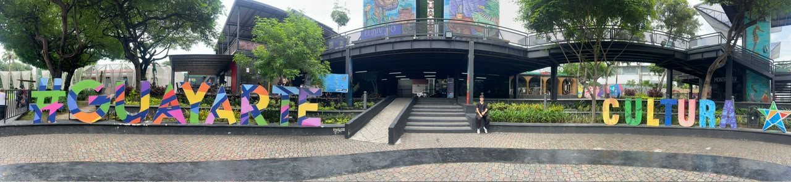
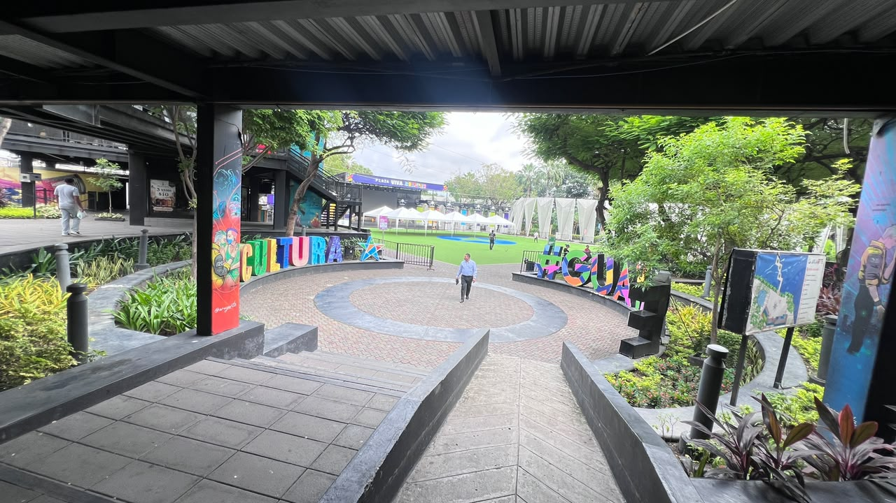
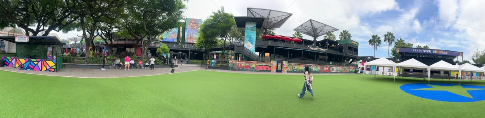
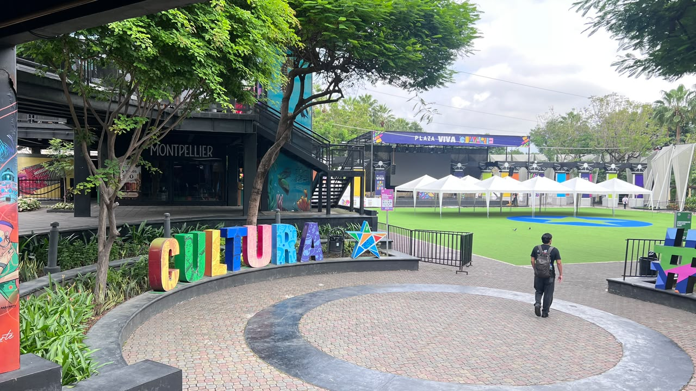
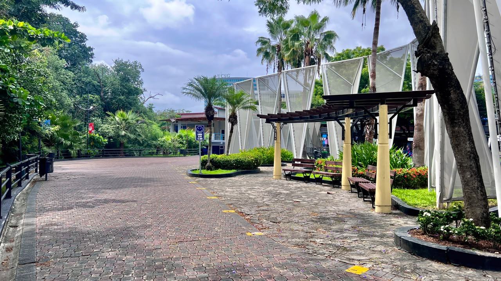

Apropiación cultural y artística del espacio público en Plaza Guayarte
Punto de encuentro entre cultura, arte urbano, gastronomía y comunidad en Guayaquil.
Av. Carlos Julio Arosemena · Jornadas de fin de semana
Cada fin de semana, la ciudadanía se reúne en Plaza Guayarte para el uso recreativo
del espacio público, combinando el consumo en emprendimientos gastronómicos locales
con expresiones artísticas, música en vivo, ferias y actividades al aire libre.

¿Quiénes participan?
Estudiantes universitarios del sector, familias, artistas y grupos artísticos, y emprendedores gastronómicos.
¿Por qué es importante para Guayaquil?
Porque representa un punto de encuentro y armonía entre la cultura, el arte, el emprendimiento y la vida diaria de la comunidad, y ofrece una alternativa al aire libre frente a los planes en centros comerciales cerrados.
Arte urbano
y murales

Columnas y paredes intervenidas con murales de gran formato y las letras monumentales #GUAYARTE y CULTURA forman parte de la identidad de la plaza. Los visitantes disfrutan recorrerla mientras observan los murales y escuchan música de fondo.
Gastronomía y
emprendimientos

Locales de comida y bebida rodean el área verde central de la plaza. Es un punto de encuentro para tomarse algo ligero o comer un postre, y los visitantes entrevistados consideran que sus precios son accesibles para todos.
Eventos en
Plaza Viva

El escenario Plaza Viva y el área de césped con carpas acogen ferias, música en vivo y presentaciones durante los fines de semana. Entre semana también se organizan actividades para personas de todas las edades.
Espacios para
estudiar y descansar

Caminerías con bancas y vegetación, muy cerca de la UCSG y de la Universidad de Guayaquil. La plaza ofrece salas de trabajo gratuitas y, según los visitantes, también alquiler de bicicletas y espacios para mascotas.
Voces de la comunidad
Sondeo realizado a dos visitantes de 18 a 29 años que frecuentan la plaza desde hace 1 a 3 años. Ambos la visitan ocasionalmente, la recomiendan, consideran que combinar comida, arte urbano y eventos beneficia a la comunidad y que sus precios son accesibles para todos.
Visitante 1
Visitante y comensal · 18–29 años · Acude en pareja
Frecuencia de visita: ocasionalmente (1 vez al mes).
Motivación principal: pasear y disfrutar del ambiente al aire libre.
Experiencia general: buena.
"Lo que más me gusta es el ambiente al aire libre y la vista cuando caminamos por el puente. Es un lugar súper chévere y tranquilo para venir a pasear en pareja, conversar, tomarse algo ligero o comer un postre mientras ves los murales o escuchas algo de música de fondo."
"Es muy importante porque en Guayaquil casi todos los planes son ir a centros comerciales cerrados. Tener un espacio abierto donde se mezcle el arte urbano con locales de comida le da otra cara a la ciudad y ofrece un punto diferente para que los jóvenes, parejas y familias salgan de la rutina."
Visitante 2
Estudiante universitaria · 18–29 años
Frecuencia de visita: ocasionalmente (1 vez al mes).
Motivación principal: trabajo y estudio, por el uso de las salas de trabajo gratuitas.
Experiencia general: muy buena.
"Claro, es un buen lugar para relajarte y distraerte con diferentes actividades."
"Es muy bueno, pero es sobre todo beneficioso para los estudiantes que estudian cerca de ahí, como estudiantes de la UG (Universidad de Guayaquil) o de la Católica (UCSG), que pueden ir a caminar y distraerse luego de sus clases."
Dificultades identificadas
Clima: las lluvias repentinas son un problema, ya que la mayor parte de la plaza y de las mesas están al aire libre y hay pocos espacios techados.
Seguridad: dentro de la plaza mejoró gracias a los guardias municipales en entradas, salidas y puentes, aunque se mantiene cierta precaución en los alrededores y por la noche.
Ambiente: el olor del Estero Salado al cruzar el puente y la basura acumulada en el río y entre los manglares.